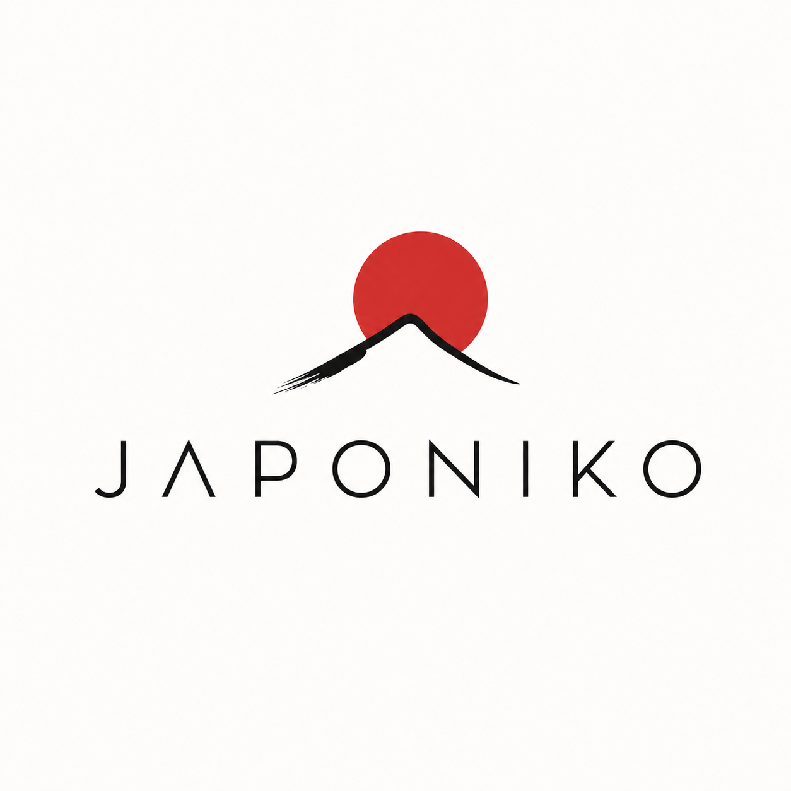
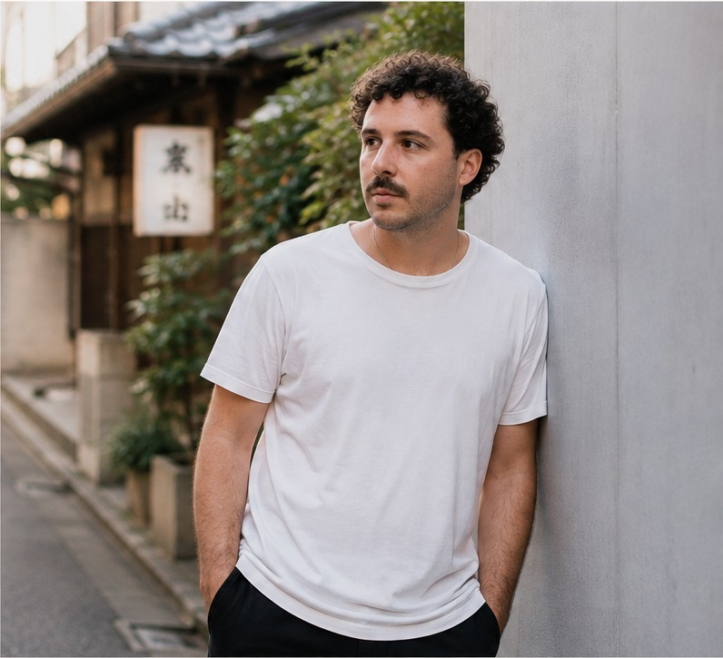

Ruta día a día
Una ruta realista, adaptada a tu ritmo y a los días que tienes.

Cómo funciona Empezar mi viajeASESORÍA PARA VIAJAR A JAPÓN
Un itinerario pensado para ti, con hoteles, transporte y recomendaciones para que viajes por libre sin perder semanas organizándolo.
39 € / persona
Itinerario + 30 días de acompañamiento
Demasiadas opciones, demasiada información y poco tiempo para saber qué merece realmente la pena.
No necesitas más información.
Necesitas saber qué hacer con ella.
Analizamos tus fechas, preferencias y presupuesto para diseñar un viaje que encaje contigo. Nada de itinerarios genéricos.
Una ruta realista, adaptada a tu ritmo y a los días que tienes.
Hoteles, vuelos, transporte, actividades y recomendaciones seleccionadas.
Todo listo para consultar y reservar cuando tú decidas.
LA ASESORÍA JAPONIKO
Un precio claro para dejar de improvisar y empezar a organizar tu viaje con una ruta que tenga sentido.
Quiero empezar →QUÉ INCLUYE
Tú realizas las reservas. Yo te ayudo a elegir las opciones que mejor encajan en tu viaje.
30 DÍAS CONTIGO
Lo revisamos, lo ajustamos y respondemos tus dudas hasta que el viaje sea realmente tuyo.
Empezar mi viaje →
QUIÉN ESTÁ DETRÁS
Llevo más de 10 años trabajando en el sector turístico. He visto cómo una buena planificación puede transformar por completo la experiencia de un viaje.
Asia siempre ha sido una de mis grandes pasiones, y Japón ocupa un lugar especial: por su cultura, su gastronomía y la forma en que cada viaje puede ser diferente.
Japoniko nace para ayudarte a vivir Japón a tu manera, con criterio y sin complicarte de más.
JAPONIKO
39 € / persona · Itinerario personalizado + 30 días de acompañamiento
Quiero empezar →